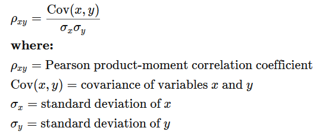
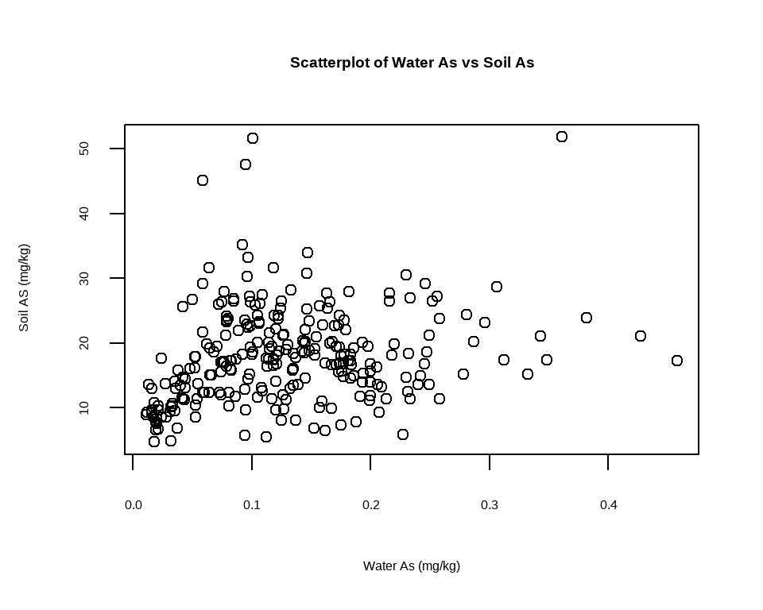
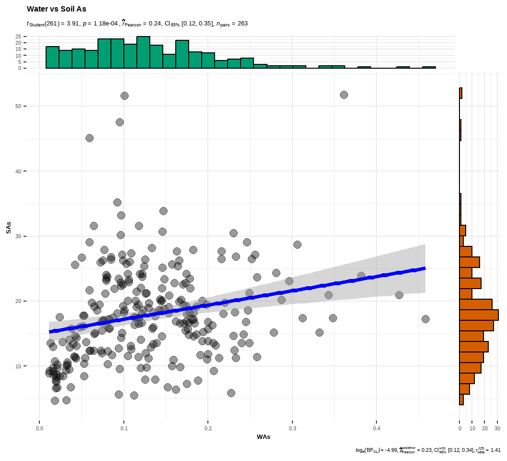

Table of Content
Load Library
In this exercise We will use following R-packages:
# load library
library(tidyverse)
library(dlookr)
library(moments)
library(car)
library(plyr)
library(data.table)
library(DT)
library(Hmisc)
library(corrplot)
library(corrr)
library(gridExtra)
library(ggExtra)
library(BSDA)
library(GGally)
library(agricolae)
library(multcomp)
library(multcompView)
library(ggfortify)
library(report)
library(ggstatsplot)Import Data
In this exercise, we use following data set:
water_soil_rice_arsenic_data.csv: Arsenic (As) data in irrigation water, paddy soil and and rice grain in a contaminated cites from Bangladesh
This data set could be found here.
We import this data using read_csv() from readr package.
# define working directory
dataFolder<-"E:/Dropbox/GitHub/chemstat-r-github.io/Data/"
df<-readr::read_csv(paste0(dataFolder,"water_soil_rice_arsenic_data.csv"))Correlation
Correlation is a statistical measure that expresses the extent to which two variables are linearly related (meaning they change together at a constant rate). It’s a common tool for describing simple relationships without making a statement about cause and effect.
How is correlation measured?
The sample correlation coefficient, r, quantifies the strength of the relationship. Correlations are also tested for statistical significance.
**What are some limitations of correlation analysis?*
Correlation can’t look at the presence or effect of other variables outside of the two being explored. Importantly, correlation doesn’t tell us about cause and effect. Correlation also cannot accurately describe nonlinear relationships.
What do correlation numbers mean?
We describe correlations with a unit-free measure called the correlation coefficient which ranges from -1 to +1 and is denoted by r. Statistical significance is indicated with a p-value. Therefore, correlations are typically written with two key numbers: r = and p = .
The closer r is to zero, the weaker the linear relationship.
Positive r values indicate a positive correlation, where the values of both variables tend to increase together.
Negative r values indicate a negative correlation, where the values of one variable tend to increase when the values of the other variable decrease.
The p-value gives us evidence that we can meaningfully conclude that the population correlation coefficient is likely different from zero, based on what we observe from the sample.
“Unit-free measure” means that correlations exist on their own scale: in our example, the number given for r is not on the same scale as either elevation or temperature. This is different from other summary statistics. For instance, the mean of the elevation measurements is on the same scale as its variable.
**What is a p-value*?**
A p-value is a measure of probability used for hypothesis testing.
It indicates the likelihood of obtaining the data that we are seeing if there is no effect present — in other words, in the case of the null hypothesis. For our campsite data, this would be the hypothesis that there is no linear relationship between elevation and temperature. When a p-value is used to describe a result as statistically significant, this means that it falls below a pre-defined cutoff (e.g., p <.05 or p <.01) at which point we reject the null hypothesis in favor of an alternative hypothesis (for our campsite data, that there is a relationship between elevation and temperature).
Pearson Correlation
The Pearson correlation coefficient (named for Karl Pearson) can be used to summarize the strength of the linear relationship between two data samples. The Pearson’s correlation coefficient is calculated as the covariance of the two variables divided by the product of the standard deviation of each data sample. It is the normalization of the covariance between the two variables to give an interpretable score. (source: https://www.jmp.com/en_us/statistics-knowledge-portal/what-is-correlation.html)
To calculate the Pearson correlation, start by determining each variable’s standard deviation as well as the covariance between them. The correlation coefficient is covariance divided by the product of the two variables’ standard deviations.
We will use cor() function of R-base (stats - package) to get Pearson correlation efficient of two numeric variables as default.
df %>% dplyr::select(WAs, SAs) %>%
cor()## WAs SAs
## WAs 1.000000 0.235157
## SAs 0.235157 1.000000Nonparametric Correlations
Nonparametric tests are generally used where the data does not follow a normal distribution. Spearman rank-order correlation is a nonparametric statistical technique for measuring the relationship between two ordinal variables or rank-ordinal correlation.
Spearman’s rank correlation measures the strength and direction of association between two ranked variables. It basically gives the measure of monotonicity of the relation between two variables i.e. how well the relationship between two variables could be represented using a monotonic function. (Source)
method is a character string indicating which correlation coefficient (or covariance) is to be computed. One of “pearson” (default), “kendall”, or “spearman”: can be abbreviated.
df %>% dplyr::select(WAs, SAs) %>%
cor(method = "spearman")## WAs SAs
## WAs 1.000000 0.275511
## SAs 0.275511 1.000000We may use cor.test() function of R-base (stats - package) to get r-and p-values:
cor.test(df$WAs, df$SAs) ##
## Pearson's product-moment correlation
##
## data: df$WAs and df$SAs
## t = 3.9087, df = 261, p-value = 0.0001183
## alternative hypothesis: true correlation is not equal to 0
## 95 percent confidence interval:
## 0.1175437 0.3462646
## sample estimates:
## cor
## 0.235157Correlation by Group
To know the relationship between WAs and SAs in two Landscapes will use ddply() function of plyr package which split data frame, apply function, (here cor()), and return results in a data frame using summarise argument
#library(plyr)
plyr::ddply(df, "Land_type", summarise, corr=cor(WAs, SAs))## Land_type corr
## 1 HL 0.40350019
## 2 MHL 0.01526773Visualizing Correlations
Scatter Plot
As we have seen Soil As increases with increases Irrigation water As (positive correlation), We can look at this directly this relationship with a scatter plot.
plot(df$WAs, df$SAs, # plot the variables
xlab="Water As (mg/kg)", # x-axis label
ylab=" Soil AS (mg/kg)", # y-axis label
main="Scatterplot of Water As vs Soil As") # title of the plot
We can create a scatter plot with ggplot2:
# Change the point size, and shape
ggplot(df, aes(x=WAs, y=SAs, color=Land_type)) +
geom_point(size=2) +
#Change the Plot title and axis labels
ggtitle("Figure #. Scatterplot of Water As vs Soil As") +
xlab("Water As (mg/kg)") + ylab("Soil As (mg/kg)") +
# customized background and front size
theme(
panel.background = element_rect(fill = "grey95",colour = "gray75",size = 0.5, linetype = "solid"),
axis.line = element_line(colour = "grey"),
plot.title = element_text(size = 16, hjust = 0.5),
axis.title.x = element_text(size = 16),
axis.title.y = element_text(size = 16),
axis.text.x=element_text(size=13, colour="black"),
axis.text.y=element_text(size=13,angle = 90,vjust = 0.5, hjust=0.5, colour='black')) +
# add legend tittle
guides(color = guide_legend(title = "Landtypes"))## Warning: The `size` argument of
## `element_rect()` is deprecated as of
## ggplot2 3.4.0.
## ℹ Please use the `linewidth` argument
## instead.
Bubble Plot
A bubble plot is a scatterplot where a third dimension is added: the value of an additional numeric variable is represented through the size of the dots. (source: data-to-viz).
# Most basic bubble plot
df %>%
arrange(desc(SAs)) %>%
mutate(Land_type = factor(Land_type)) %>%
ggplot(aes(x=WAs, y=Grain_As, size = SAs, color=Land_type)) +
geom_point(alpha=0.5) +
scale_size(range = c(.1, 10), name="Soil As (mg/kg)")+
guides(color = guide_legend(title = "Landtypes"))+
# Change the Plot tittle and axis labels
ggtitle("Figure #.Bubble Plot of Water As vs Grain As") +
xlab("Water As (mg/kg)") + ylab("Grain As (mg/kg)") 
Marginal Plot
We can add marginal distribution on X and Y axis of a scatterplot. The ggExtra library makes it a breeze thanks to the ggMarginal() function. Three main types of distribution are available: histogram, density and boxplot.
# classic plot :
p <- ggplot(df, aes(x=WAs, y=Grain_As, color=Land_type, size=SAs)) +
geom_point() +
theme(legend.position="none") +
xlab("Water As (mg/kg)") + ylab("Grain As (mg/kg)")
# add legend tittle
# with marginal histogram
p1 <- ggMarginal(p, type="histogram", size=10)
# marginal density
p2 <- ggMarginal(p, type="density")
# marginal boxplot
p3 <- ggMarginal(p, type="boxplot")grid.arrange(p1, p2, p3, ncol=3)Marginal Plot Statistical Results
ggscatterstats() function from ggstatsplot will create Scatterplots from ggplot2 combined with marginal densigram (density + histogram) plots with statistical details.
ggstatsplot::ggscatterstats(
data = df,
x = WAs,
y = SAs,
title = "Water vs Soil As",
messages = FALSE
)
Correlation Matrix
A correlation matrix is a table or plots showing correlation coefficients between sets of variables. The correlation matrix is used to summarize data, as an input into a more advanced analysis.
rcorr() function of Hmisc Computes a matrix of Pearson’s r or Spearman’s rho rank correlation coefficients for all possible pairs of columns of a matrix.
df.cor<-df %>% dplyr::select(WAs, WFe, WFe, SAs, SPAs, SAoAs, SAoFe, Grain_As)
cor.mat<-Hmisc::rcorr(as.matrix(df.cor, type="pearson"))
cor.mat## WAs WFe SAs SPAs SAoAs SAoFe Grain_As
## WAs 1.00 0.24 0.24 0.28 0.27 -0.10 0.33
## WFe 0.24 1.00 0.32 0.30 0.31 0.02 0.15
## SAs 0.24 0.32 1.00 0.89 0.89 -0.11 0.29
## SPAs 0.28 0.30 0.89 1.00 0.85 -0.08 0.31
## SAoAs 0.27 0.31 0.89 0.85 1.00 -0.02 0.22
## SAoFe -0.10 0.02 -0.11 -0.08 -0.02 1.00 -0.22
## Grain_As 0.33 0.15 0.29 0.31 0.22 -0.22 1.00
##
## n= 263
##
##
## P
## WAs WFe SAs SPAs SAoAs SAoFe Grain_As
## WAs 0.0000 0.0001 0.0000 0.0000 0.1059 0.0000
## WFe 0.0000 0.0000 0.0000 0.0000 0.7273 0.0127
## SAs 0.0001 0.0000 0.0000 0.0000 0.0787 0.0000
## SPAs 0.0000 0.0000 0.0000 0.0000 0.1714 0.0000
## SAoAs 0.0000 0.0000 0.0000 0.0000 0.7247 0.0004
## SAoFe 0.1059 0.7273 0.0787 0.1714 0.7247 0.0003
## Grain_As 0.0000 0.0127 0.0000 0.0000 0.0004 0.0003Pairs Plots
The function ggpairs() from GGally leverages a modular design of pairwise comparisons of multivariate data and displays either the density or count of the respective variable along the diagonal.
GGally::ggpairs(df.cor)
Correlation Matrix Plots
You can create a graphical display of a correlation matrix using the function corrplot() of corrplot package. The function corrplot() takes the correlation matrix as the first argument. The second argument (type=“upper”) is used to display only the upper triangular of the correlation matrix. The correlation matrix is reordered according to the correlation coefficient using “hclust” method
corrplot(cor.mat$r, type="upper", order="hclust",
main="", cex.lab = 0.5,
tl.col = "black",
p.mat = cor.mat$p, sig.level = 0.05, insig = "blank")
In this plot, correlation coefficients are colored according to the value. Correlation matrix can be also reordered according to the degree of association between variables. Positive correlations are displayed in blue and negative correlations in red color. Color intensity and the size of the circle are proportional to the correlation coefficients. In the right side of the correlogram, the legend color shows the correlation coefficients and the corresponding colors. The correlations with p-value > 0.05 are considered as insignificant. In this case the correlation coefficient values are leaved blank.
corrplot(cor.mat$r, method = 'color', order = 'alphabet',
main="", cex.lab = 0.5,
tl.col = "black",
p.mat = cor.mat$p, sig.level = 0.05, insig = "blank")
We may also use correlate() function of dlookr package to calculate the correlation coefficient of all combinations of numerical variables of a data set.
df %>% dplyr::select(WAs, WFe, WFe, SAs, SPAs, SAoAs, SAoFe, Grain_As) %>%
dlookr::correlate()## # A tibble: 42 × 3
## var1 var2 coef_corr
## <fct> <fct> <dbl>
## 1 WFe WAs 0.243
## 2 SAs WAs 0.235
## 3 SPAs WAs 0.281
## 4 SAoAs WAs 0.275
## 5 SAoFe WAs -0.0999
## 6 Grain_As WAs 0.326
## 7 WAs WFe 0.243
## 8 SAs WFe 0.321
## 9 SPAs WFe 0.300
## 10 SAoAs WFe 0.314
## # … with 32 more rowsplot_correlate() function dlookr package visualizes the correlation matrix.
df %>% dplyr::select(WAs, WFe, WFe, SAs, SPAs, SAoAs, SAoFe, Grain_As) %>%
dlookr::plot_correlate() ## Warning: 'dlookr::plot_correlate' is deprecated.
## Use 'plot.correlate' instead.
## See help("Deprecated")
Network Plot of a Correlation Matrix
Output a network plot of a correlation data frame in which variables that are more highly correlated appear closer together and are joined by stronger paths. Paths are also colored by their sign (blue for positive and red for negative). The proximity of the points are determined using multidimensional clustering.
We will use network_plot() function of corrr package:
df %>%
dplyr::select(WAs, WP, WFe, WFe, SAs, SPAs, SAoAs, ELEV, Grain_As) %>%
correlate() %>%
# use mirror = TRUE to not only select columns but also filter rows
corrr::focus(WAs:Grain_As, mirror = TRUE) %>%
corrr::network_plot(colors = c("red", "yellow", "green", "blue"))## Correlation computed with
## • Method: 'pearson'
## • Missing treated using: 'pairwise.complete.obs'
We can use only focus() function of on correlations of one variable with all others and plot the results.
df %>%
dplyr::select(WAs, WP, WFe, WFe, SAs, SPAs, SAoAs) %>%
correlate() %>%
corrr::focus(SAs) %>%
ggplot(aes(y=SAs, x= reorder (term, +SAs))) +
coord_flip() +
geom_col() +
ggtitle("Figure #: Correlation Coefficent between Soil As and Covariates") +
xlab("Variables") + ylab("r-values") +
theme(
panel.background = element_rect(fill = "grey95",colour = "gray95",size = 0.5, linetype = "solid"),
axis.line = element_line(colour = "grey"),
plot.title = element_text(size = 12, hjust = 0.5),
axis.title.x = element_text(size = 12),
axis.title.y = element_text(size = 12),
axis.text.x=element_text(size=12, colour="black"),
axis.text.y=element_text(size=12,angle = 90,vjust = 0.5, hjust=0.5, colour='black'))